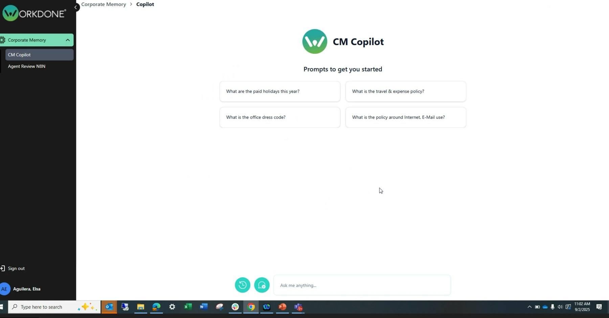

Helped uncover $1M+ in procurement savings opportunities through AI workflow capture across ERP-adjacent purchasing processes, then operationalized a SharePoint-backed RAG + HITL workflow that reduced manual work 60% & generated $85K in verified savings.

Single query surface for buyers and planners. Authoritative SharePoint docs, embedded and retrieved on demand.
435+ queries processed. Engineering led, Manufacturing and Product followed.
Procurement savings opportunities surfaced through AI workflow capture across ERP-adjacent processes. $85K already verified · 60% manual work cut.
No model fine-tuning. No agent orchestration. Just clean retrieval over the right docs and a human gate on the write path — $1M+ in savings opportunities surfaced, $85K verified, 60% of manual work gone.